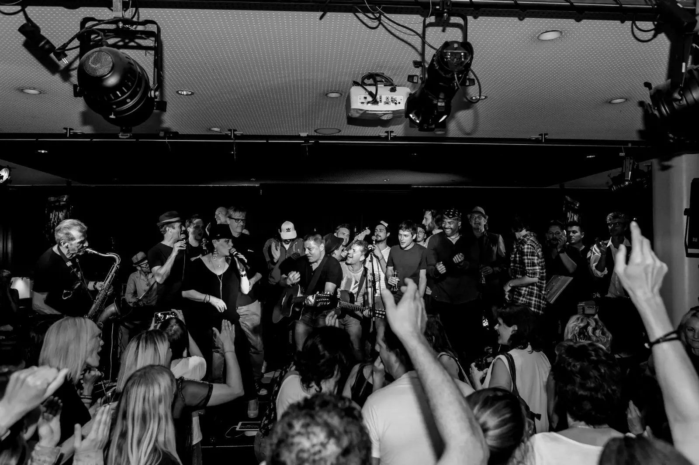
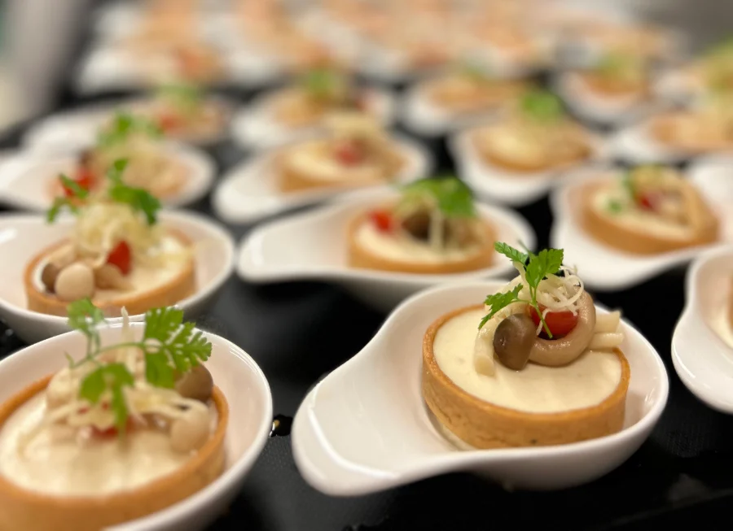
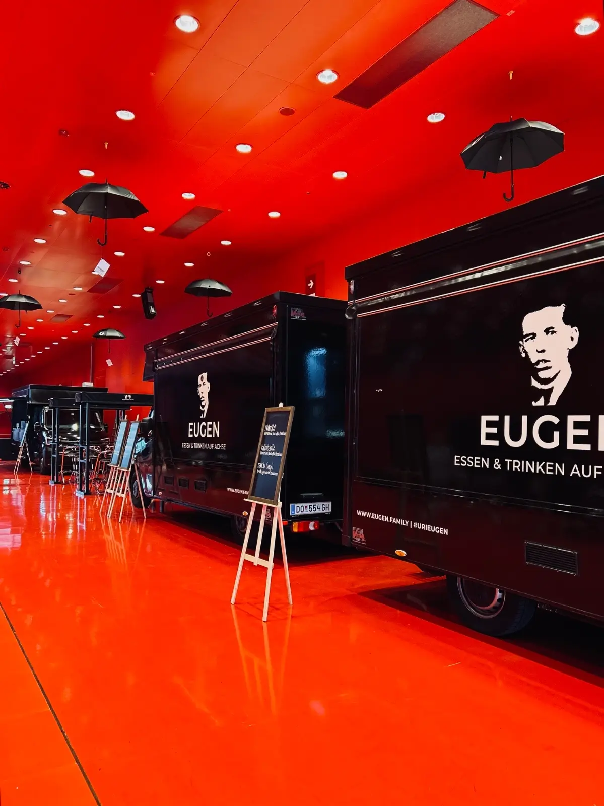
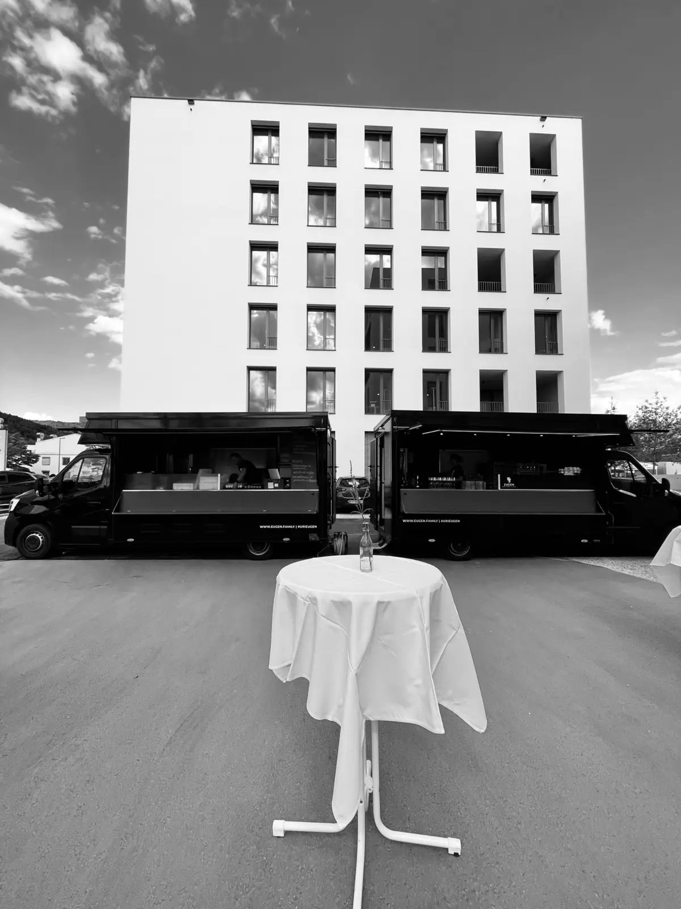

Dornbirn · Vorarlberg
Wo Dornbirn
sich treafft.
Restaurant & Livebühne in Dornbirn: mittags frisch gekocht, abends Genuss, Kultur & besondere Events.

Abends in Dornbirn · Programm
Euer Abend
steht schon.
Gutes Essen, große Bühne, besondere Abende: in der „wirtschaft“ und im Kulturhaus Dornbirn erwarten euch „Dinner & Konzert/Comedy“ und viele weitere Events. Lieblingsabend aussuchen, Platz sichern und genießen.

Mittag · 11:30–13:30
Frisch gekocht.
Jeden Mittag.
Jede Woche neue Mittagsmenüs in der „wirtschaft“ – abwechslungsreich & saisonal.
Catering & Livebühne auf Achse
Emma & Eugen
kommen zu euch.
Ihr plant das Event, wir kümmern uns um den Genuss. Für Hochzeiten, Firmenfeiern und besondere Anlässe: wir bringen Genuss dorthin, wo gefeiert wird – in ganz Vorarlberg.



Gutscheine
Freude verschenken.
Ein besonderes Erlebnis, verpackt in einem Gutschein – eine Musik- oder Comedyveranstaltung oder ein Gutschein mit dem Wert deiner Wahl. Die beschenkte Person sucht sich den Termin selbst aus.
@wirtschaft_dornbirn · zuletzt bei uns
auf instagram folgen ↗


die bilder liegen auf unserem server – beim ansehen fließt nichts an instagram. der klick führt zum jeweiligen beitrag.